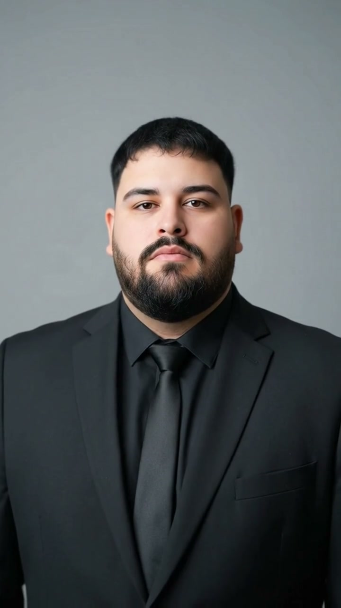

Curriculum · 2026
Fabricio Nicolás Duarte
Data Engineer / Analytics Engineer · también producto. Remoto desde Argentina.
04 Perfil
Ingeniería de datos y analítica en producción: integración entre sistemas heterogéneos, un criterio de cálculo y tableros con recorte por organismo. Complemento con desarrollo de aplicaciones y sitios sobre la misma información. En ECOM esa analítica la usan instituciones distintas al equipo que la construye. Programador senior (UTN — Facultad Regional Resistencia, 9.40). Data engineer en curso (UGR).
05 Experiencia
Ingeniería de datos y software
2023 — actualidadECOM Chaco S.A. — empresa tecnológica de la Provincia del Chaco (SAPEM)
Diseño y opero plataformas de datos que usan organismos todos los días: tableros, permisos y procesos que corren solos.
- Arquitectura de información y tableros (Apache Superset / Power BI) con recorte por organismo e identidad federada: cada uno ve solo lo suyo.
- Backend Django: GIS, KPIs, auditoría de quién consulta y exportación controlada de datasets.
- Plataforma de Servicios e Instituciones; plataforma de Personas Físicas y Jurídicas.
- Cruce de SQL Server y PostgreSQL. Refresco en cluster. Si una carga falla, el sistema avisa (Celery / Redis).
Lead developer & CTO
2022 — actualidadSkadia — ganadería de precisión
Dirección técnica de productos digitales en agrotech.
- SIGAG: captura en campo sin señal (Expo, WatermelonDB), visión, sincronización al volver la red.
- Arquitectura, CI/CD y equipos ágiles (Jira / Scrum).
- Lakehouse de demostración: Airflow + PySpark (ganancia diaria, carga, horas de calor, BCS).
Asesor tecnológico y de datos
2026 — actualidadConsultoría — Livio Gutiérrez, Presidencia del Nuevo Banco del Chaco
Asesoramiento personal en tecnología, datos y modernización de procesos. No es vínculo de empleo con el banco.
Asesor tecnológico y de comunicación
2023 — 2026Consultoría — Livio Gutiérrez (Coordinación de Gabinete, Chaco)
Asesoramiento personal en comunicación y tecnología digital.
Asesor tecnológico y de datos
2018 — actualidadMg. Méd. Julián Bibolini · Ministerio de Desarrollo Humano / UPLAB · Formosa
- Datos sanitarios e indicadores para decisión institucional; no operación transaccional.
- Consolidación y reporte a autoridad; modernización de la gestión académica (Facultad de Medicina).
Asesor de comunicación y tecnología
2019 — 2023Concejo Municipal de Presidencia Roque Sáenz Peña (Pedro Egea) · Chaco
Transformación digital de canales institucionales y operación remota.
Asesor legislativo
2015 — 2018Consultoría — Cámara de Diputados del Chaco (Livio Gutiérrez)
Asesoramiento en comunicación y tecnología.
Capacitador
2016 — 2017Plan Nacional de Alfabetización Digital · Ministerio de Modernización
Capacitación en oficina y herramientas digitales para inclusión laboral.
Asesor técnico
2016 — 2017Defensoría del Pueblo de Formosa — Defensor Adjunto Hugo Maldonado
Apoyo técnico en gestión de reclamos y comunicación digital.
06 Stack y competencias
Datos e ingeniería — producción
SQL, PostgreSQL, SQL Server, MySQL, PostGIS, MongoDB. Django, DRF, Celery / Redis, ETL, Python, pandas. Apache Superset, Power BI, DAX, Docker.
Producto y automatización — producción
Laravel, Livewire, PHP 8, Vue 3, Nuxt, TypeScript, Pinia, Quasar, Node.js, REST. n8n, webhooks, CI/CD, Git, Jira.
Mobile, lakehouse y modelos — sólido / aplicado
Expo, React Native, WatermelonDB, Flutter, Dart. Apache Airflow, PySpark, Delta Lake, Databricks, Streamlit. TensorFlow, PyTorch, Gemini. Make, Power Automate, Apps Script.
Diseño y documentación
Figma y Adobe CC (Photoshop, Illustrator) para tableros y explicación de datos.
07 Productos
- SIGAG — Sistema Integral de Gestión Agrícola Ganadera. Offline-first, visión, IA conversacional y orquestador. Varias instalaciones vendidas.
- Nutrogan — Plataforma ganadera offline-first: indicadores, GIS y visión. En uso. Colaboración CEDEVA. Base técnica de SIGAG.
- SIGCL — Institutos de capacitación: sedes, matrícula, asistencia QR, arancel, actas y analíticos. Vendida 4 veces.
- Cocoma — Escritorio de oferta: tarifario, COCOMO I/II, EDT, riesgo P80 y PDF/Excel. Comercializada USD 1.500.
- Pasarela de cobros — Conciliación asíncrona por colas, webhooks y lotes.
- FormoBus — PWA de transporte urbano. Donada; en uso en un organismo público.